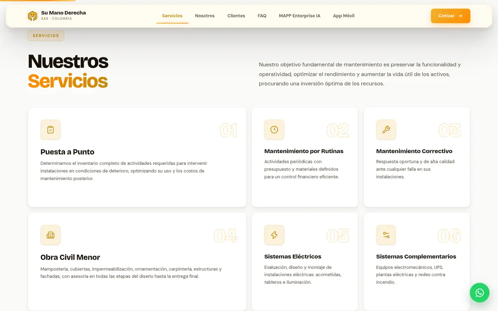
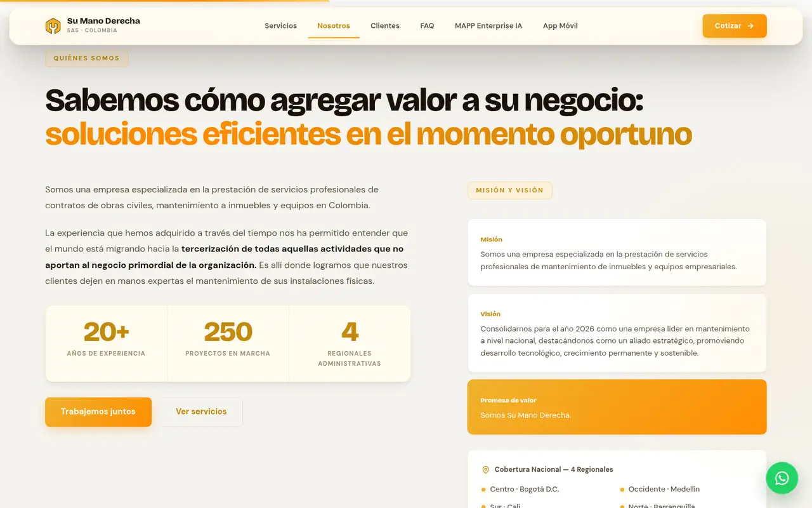
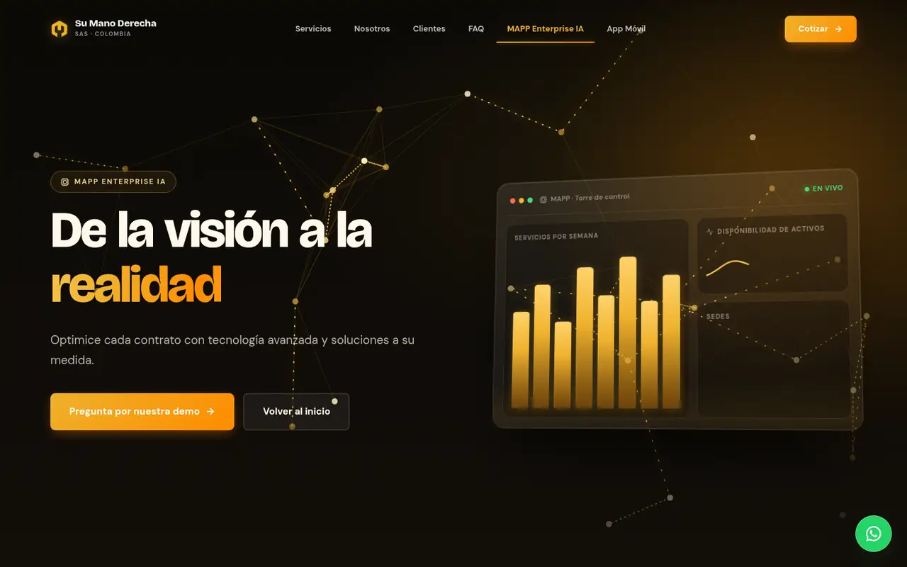
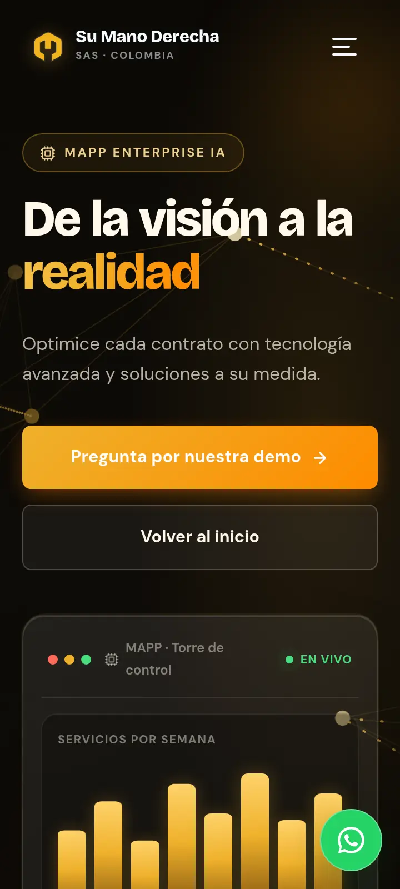
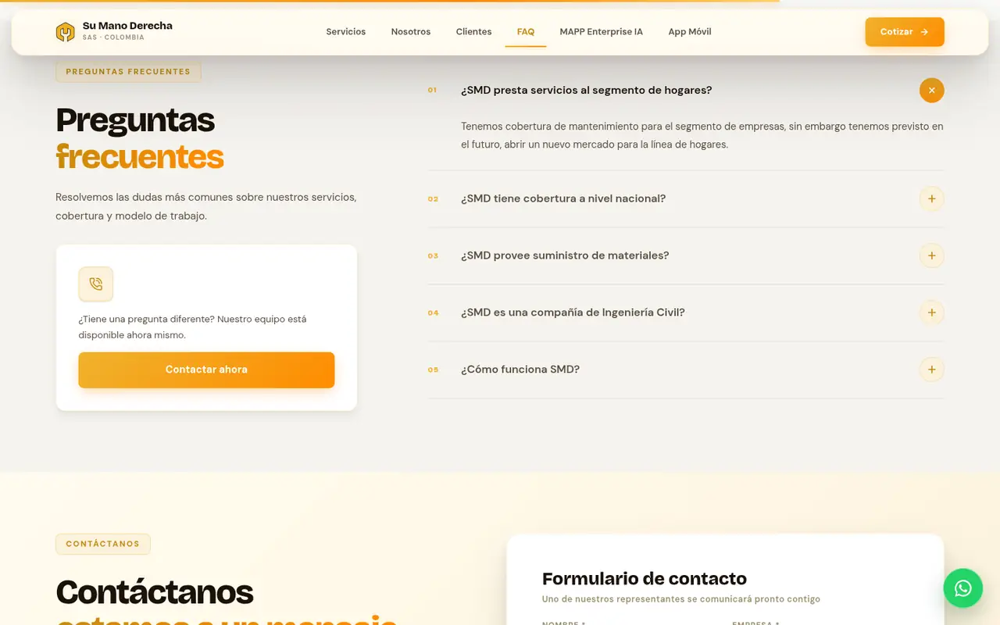
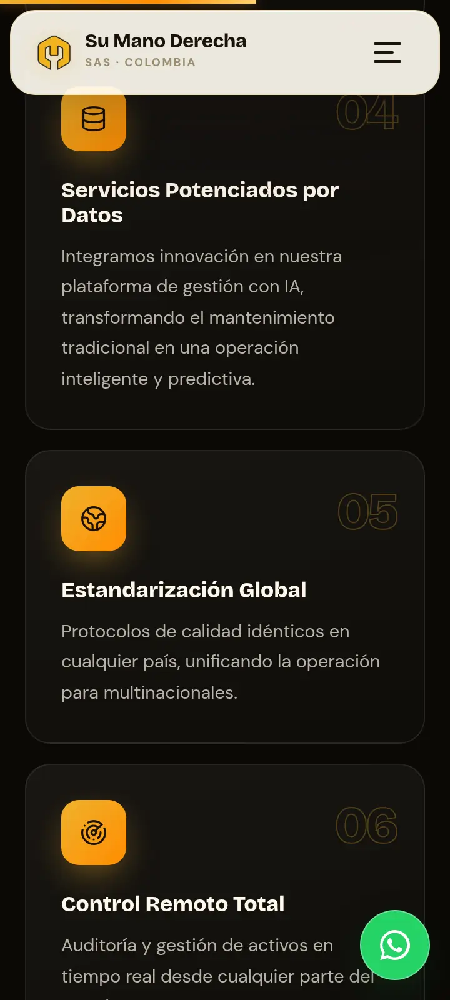

Su Mano Derecha S.A.S. · SMD
Mantenimiento y obras civiles para empresas








Así se recorre la landing
Grabaciones reales del sitio publicado: la cortina con el logo, la portada, los servicios, los clientes y el contacto; y en el celular, el portón industrial de la página de la app.
Una página que se mueve como la plataforma
La página de MAPP Enterprise IA presenta la plataforma de gestión con inteligencia artificial con animaciones propias, hechas a mano:
- Una red neuronal de 34 nodos con pulsos de luz que viajan entre ellos.
- Una «torre de control» en 3D con barras que oscilan y una curva que se dibuja.
- Un radar que barre las cuatro regionales: Norte, Sur, Occidente y Centro.
- Un electrocardiograma que late bajo «En SMD, la tecnología no descansa».
Una demo interactiva de la app, dentro de la web
En la página de la App Móvil no hay un video de la app: hay una réplica que se puede usar. El visitante prueba la app de los técnicos antes de instalarla:
- Cambia entre Agenda, Visitas, Ejecuciones y Mensajes.
- Filtra la agenda por día, mes o pendientes y pasa de una fecha a otra.
- Escribe en el chat con la coordinación y recibe respuesta.
- Reproduce una nota de voz y ve la foto de evidencia de una visita.
La cara digital de una empresa de mantenimiento
Su Mano Derecha S.A.S. hace mantenimiento de inmuebles y equipos y obras civiles menores para empresas en toda Colombia, con más de 20 años de experiencia y regionales en Bogotá, Medellín, Cali y Barranquilla.
Diseñé y programé su landing: la portada de la empresa, dos páginas de producto (MAPP Enterprise IA y la App Móvil de sus técnicos) y un portal de formularios para el personal de campo. El objetivo: transmitir confianza y que cotizar sea a un toque.
- Cliente
- Su Mano Derecha S.A.S.
- Tipo
- Landing page corporativa
- Mi papel
- Diseño, desarrollo y publicación
- Publicada
- Agosto de 2026 · rediseño en noviembre
- Dónde verla
- smd.com.co
Lo que la hace especial
Una entrada con marca
Al abrir, una cortina con esquinas de plano de obra muestra el logo original animado pieza a pieza: la S y la D salen del hexágono, que entra girando como una tuerca.
Palabras con tuercas
Una banda de servicios se desliza en sentidos opuestos con el scroll, separada por tuercas que giran.
Cifras que cuentan
20+ años, 250 proyectos, 4 regionales y 54+ empresas aparecen contando al entrar en pantalla.
Botones magnéticos
Los botones de cotizar se acercan al puntero y un halo dorado sigue al ratón por las tarjetas.
La app, dentro de la web
Una réplica navegable de la app de los técnicos, con agenda, visitas y un chat funcional con foto y nota de voz.
Un portón industrial
La página de la app abre con un portón metálico de dos hojas que se cierra, levanta polvo y estampa el logo.
MAPP Enterprise IA
Una red neuronal animada y una torre de control con radar presentan la plataforma de gestión con inteligencia artificial.
Contacto a un toque
Formulario de cotización, botón de WhatsApp siempre a mano y un portal de formularios para los técnicos.
Rápida, segura y fácil de mantener
Abre en un segundo
La cortina solo espera lo esencial y los 55 logos de clientes se cargan cuando se ven.
Segura
Se sirve con HTTPS y encabezados de seguridad desde la nube de Amazon, en un servidor privado.
Se publica sola
Cada cambio se revisa y se publica automáticamente; si algo falla, la versión anterior sigue en línea.
Para todos
Respeta a quien prefiere menos movimiento y funciona igual en celular, tablet y computador.
Cada sección, en cada pantalla
Capturas del sitio publicado. Desliza para ver más.
En el computador



En el celular




Visítala
La landing está publicada en smd.com.co. Si tu empresa necesita una landing que transmita confianza y venda, escríbeme.